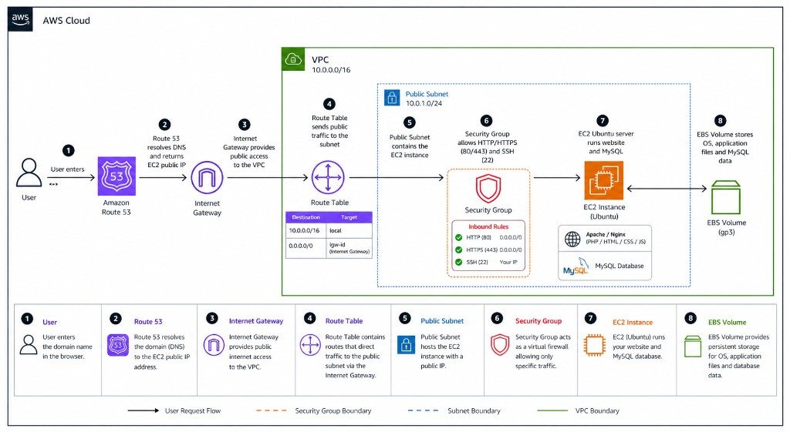
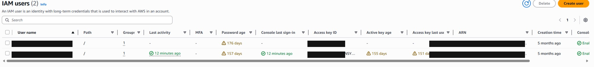
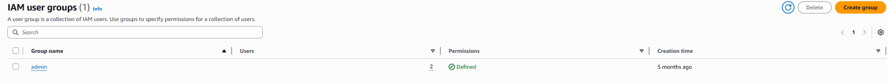
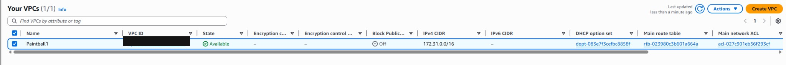
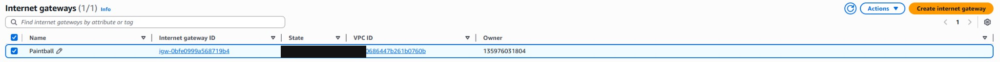
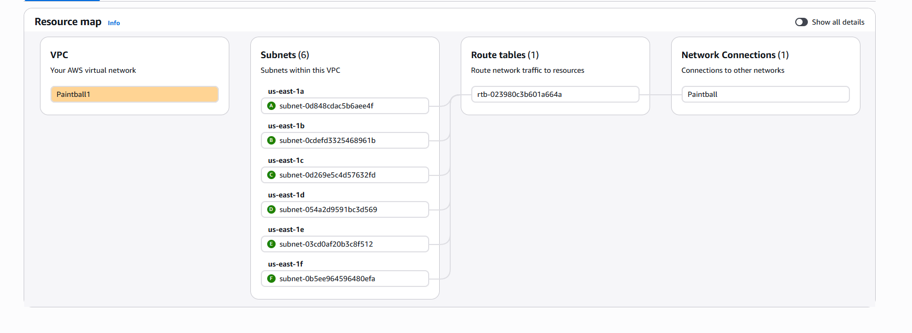
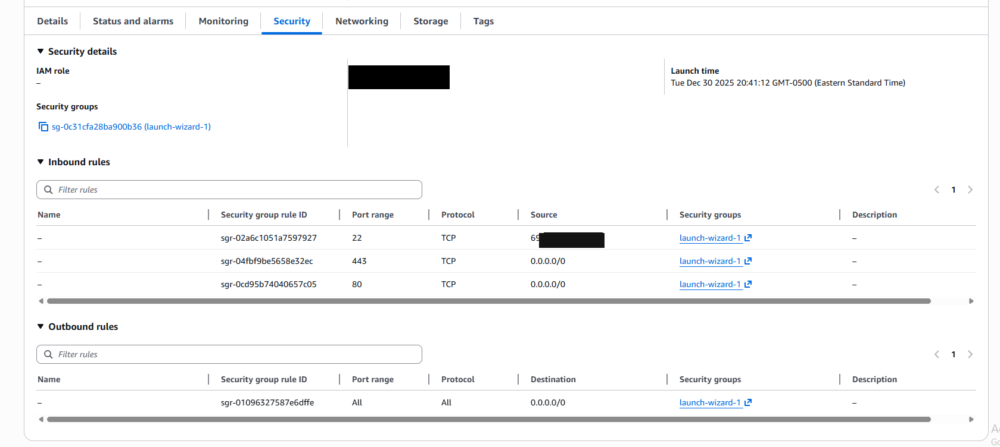
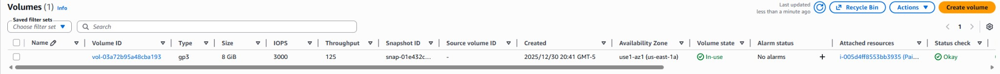

AWS Cloud Hosted Database Management System
Overview
This LAMP application is hosted on AWS (EC2), MySQL as the database. The goal of this project was to track all rental equipment used by (Paintball Sports Land Inc). While keeping track of the equipment and the customers that rented it. The website also keeps track of party reservations made by the customers. Along with the fields that are rented out and are currently in use, so no overbooking of fields or equipment can occur.

Launching the project
I initially experimented with a container-based setup on AWS. After revisiting monthly costs and what this workload actually needed, I redesigned the deployment around a simpler EC2-hosted LAMP stack. Below is the path I followed end-to-end, including an Elastic IP so DNS stays stable.
-
Account & IAM
I avoided day to day work on the AWS root user and instead relied on IAM users scoped for everyday administration tasks, this allowed me to have the good IAM security practices in place and not have to worry about the root user.
Both identities live inside an IAM user group with administrator aligned policies attached at the base level. Below are snapshots from the IAM Users console and the shared admin group.

IAM Users: dedicated identities instead of working through root. 
IAM User groups: shared admin group carries permissions once. -
Domain (Route 53)
I registered the domain through Route 53 and used it as the anchor for public DNS later, once I had a stable IP pointing at the instance (Elastic IP in step 8).
-
VPC & Internet Gateway
I created a VPC for the environment and attached an Internet Gateway to it so the VPC could exchange traffic with the internet, which is the prerequisite for a public facing subnet and inbound HTTPS/HTTP.


-
Public subnet & routing
Inside the VPC I configured subnets and route tables so traffic destined for the internet (
0.0.0.0/0) could reach the Internet Gateway, matching the path from the architecture diagram into my VPC.Resource map shows subnets across multiple
us-east-1availability zones tied to the shared route table and the network connection.
VPC resource map: subnets, route table, and gateway connection in one view. -
Security groups
From the EC2 console I opened my instance and used the Security tab to review the attached security group and rules I set up previously (inbound TCP for SSH (22), HTTP (80), and HTTPS (443), plus the default outbound rule allowing responses and package installs during setup).
SSH is limited to a single source IP which is my public IP (
/32); HTTP and HTTPS stay open to0.0.0.0/0for the web app. Other secure ways of accessing the instance are through AWS Systems Manager Session Manager or EC2 Instance Connect.
EC2 → Security: inbound/outbound rules for the instance’s security group. -
EC2 instance
I launched an Ubuntu EC2 instance into a public subnet with the right security group and key pair so I could SSH in for installation and troubleshooting. AMI choice, instance type, and subnet placement were all validated against cost vs capacity for this workload.
-
EBS storage
The instance ran with EBS backed storage. AWS provisioning attaches a root volume by default; the diagram treats persistent disk explicitly because OS, application, and database files all need durable block storage even when traffic spikes aren’t huge yet. For a larger application I would use a RDS instance for the database and a larger instance type for the web server.

-
Elastic IP & Route 53
I allocated an Elastic IP and associated it with the instance so stop/start cycles wouldn’t break inbound DNS. Then I pointed Route 53’s record set at that Elastic IP so the domain reliably resolved to the running server.
-
Stack install & deploy
Over SSH I installed and configured Apache and PHP, deployed the application files to the server, and set up MySQL with the schema and data needed for equipment reservations, bringing the hosted stack in line with the above architecture diagram.